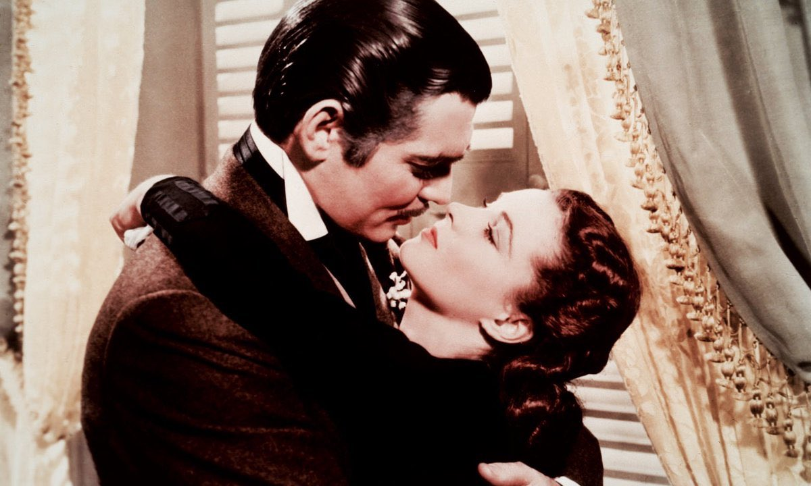
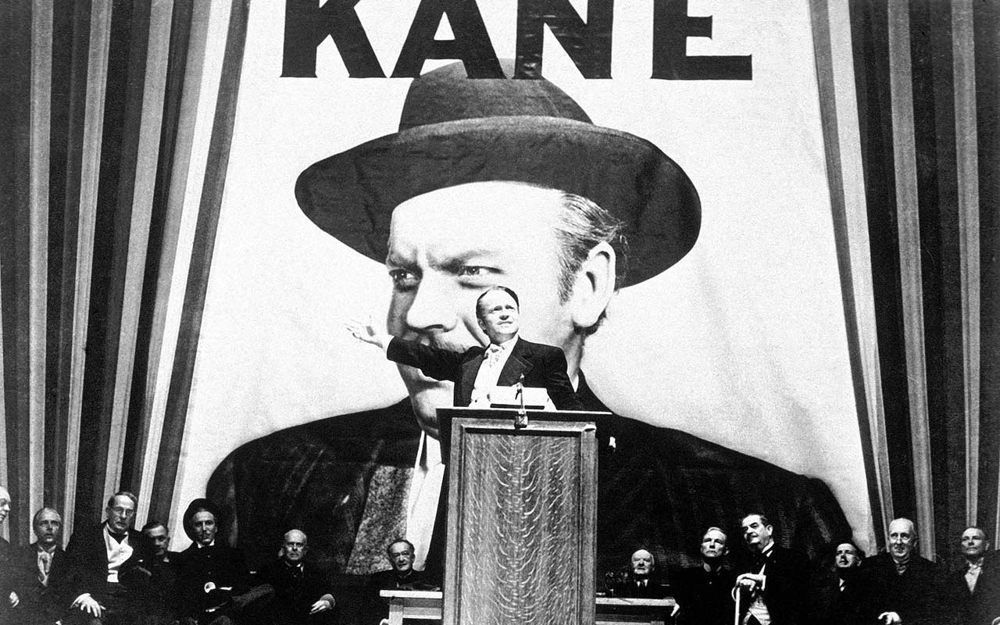
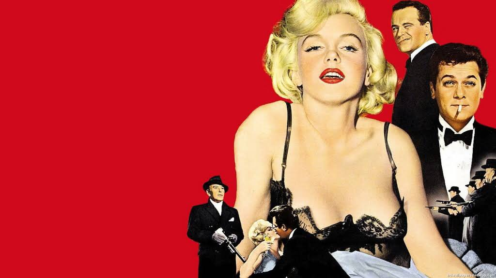

1930-е годы
Начинаются 1930-е. Появляется цветное кино. В Голливуде господствуют шесть киностудий: Metro-Goldwyn-Mayer (MGM), Paramount Pictures, Warner Brothers, 20th Century Fox, Universal Pictures и RKO Pictures. В начале 1930-х студия Юниверсал была в большом кризисе. Они решили снимать фильмы ужасов. Так в 1931 г. вышел "Дракула" с Бела Лугоши в главной роли. Эта картина стала неожиданным хитом и студия создала целую вселенную иконичных монстров: "Франкенштейн" с Борисом Карлоффом, "Невеста Франкенштейна" 1935 г., "Мумия" 1932 г., "Человек-невидимка" 1933 г. маленькая студия RKO под руководством Девида Селзника создала в 1933 г. еще одного культового монстра в фильме "Кинг-Конг". Из-за обилия наготы и жестоких гангстерских фильмов, был принят «Кодекс Хейса». Этот свод этических правил, основанных на христианской системе ценностей, вводил жёсткую цензуру для выходивших в прокат картин и просуществовал более 30 лет. Тем не менее на свет всё ещё вышло множество шедевров, многие из которых стали примером качественного сценария, режиссуры, постановки и актёрской игры. Это были комедия "Любовный роман", мелодрама "Ниночка", приключения "Только у ангелов есть крылья", драма "Грозовой перевал" и историческая легендарная экранизация "Унесенные ветром". Также стоит отметить выход первого в истории полнометражного мультфильма "Белоснежка и семь гномов" Уолта Диснея. Успех этой картины доказал, что взрослый зритель способен сочувствовать и сопереживать нарисованным героям. Этот мультфильм позволил Диснею создать свою собственную успешную студию.
Кинематограф 1930х годов

Военное и послевоенное время
1940-е годы стали временем революционеров. Альфред Хичкок перебрался из Британии в США, снял свой первый американский фильм "Ребекка" 1940 г. и создал свой собственный жанр - саспенс. В 1941 г. Орсон Уэллс, успевший прославиться на радио и в театре, снимает свой дебютный фильм "Гражданин Кейн". Этот фильм перевернул киноиндустрию и научил создавать кино с переходами в повествовании, флэшбеками, демонстрацией одного эпизода с разных точек зрения, мастерски акцентировать внимание зрителей и снимать крупные планы... Этот фильм стал настольной книгой кинематографистов. Диктатура в Германии и Вторая мировая война не могли не отразиться на Голливуде. В 1940 г. Чарли Чаплин снимает мощную политическую сатиру на Гитлера "Великий Диктатор". "Касабланка" 1942 г. стала воплощением идеи борьбы против фашизма с помощью проявления любви к своей стране. Это фильм о беженцах - и большинство актеров в реальности были беженцами, покинувшими Германию. Во время войны снималось много патриотических военных фильмов, вовлекающих зрителей в войну. Также в эти годы появились фильмы, положившие начало жанру нуар. Стоит отметить и развитие анимации, как Голливудской («Золушка», «Бэмби»), так и Советской («Гуси-лебеди», «Цветик-Семицветик» ).
Кинематограф 1940х годов

1950е годы
1950-е начались для Голливуда с новых трудностей. В домах американцев появились телевизоры и они все реже стали ходить в кинотеатры. Это заставило киностудии создавать крупные высокобюджетные эпопеи с библейскими сюжетами. Фильмы "Бен-Гур" 1959 г., "Самсон и Далила" 1949 г., "Камо грядеши" 1951 г., "Плащаница" 1953 г. были призваны стать ярким впечатлением для зрителей. Голливуд вынужден был перестать лениться и начать создавать яркие мюзиклы со зрелищными музыкальными номерами - "Поющие под дождем" 1952 г., "Американец в Париже" 1951 г., "Театральный фургон" 1953 г., "Звезда родилась" 1954 г. Как только завершилась Вторая мирова война, стартовая Холодная война и Голливуда она коснулась через Комиссию по расследованию антиамериканской деятельности. Сценаристов и режиссеров признавали причастными к деятельности коммунистов. Был создан черный список кинематографистов, студии начали увольнять сотрудников. Страх атомной войны, опасность коммунизма, критика маккартизма, атмосфера конспирологии и паранойи нашли аллегоричное выражение в фильмах об инопланетных вторжениях и монстрах. Изменился подход к актерскому мастерству. Марлон Брандо с его фильмами "Трамвай Желание" 1951 г. и "В порту" 1954 г. переосмыслил актерское искусство. Он понимал душу своего персонажа. Аналогично Мерилин Монро стала одним из главных воплощений Голливуда благодаря образам из "Джентльмены предпочитают блондинок" 1953 г., "В джазе только девушки" 1959 г. и "Как выйти замуж за миллионера" 1953 г. Сегодня ее воспринимают как секс-символ и недостаточно ценят ее комедийный и драматический актер. Смерть Иосифа Сталина в марте 1953 года стала поворотным пунктом в истории и жизни всего СССР и конечно же отразилась на кинематографе. В рамках смены политического курса почти сразу же была произведена реорганизация системы управления культурой. В том числе было ликвидировано Министерство кинематографии, а кино передали управлениям при Министерстве культуры. Важным следствием этого стало относительное ослабление государственного контроля. Отечественный кинематограф середины 1950-х — конца 1960-х — это кинематограф оттепели. Советское киноискусство в эти годы активно обновляется, открывая новые темы и технические возможности. Во многом этот процесс строится на полемике с художественными установками сталинского кино. Кинематограф становится более гуманистичным. Главный экранный герой эпохи — «простой человек», который к тому же сильно молодеет по сравнению с героями предшествующей эпохи.
Фильмы 1950-х годов
